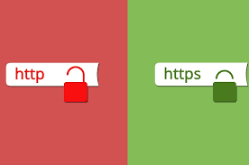

HTTP/HTTPS
HTTP: HTTP é um protocolo (protocol) que permite a obtenção de recursos, como documentos HTML. É a base de qualquer troca de dados na Web e um protocolo cliente-servidor, o que significa que as requisições são iniciadas pelo destinatário, geralmente um navegador da Web.
HTTPS: HTTPS ou Hyper Text Transfer Protocol Secure, é um protocolo da internet que visa realizar a comunicação de dispositivos com os servidores do mundo todo. O protocolo HTTPS surgiu como uma evolução ao procolo antecessor o HTTP, a diferença entre eles é que o HTTPS possui a comunicação de dispositivos criptografada.
Diferença de HTTP/HTTPS: O HTTPS é uma sigla para Hypertext Transfer Protocol Secure. Essa é uma versão de protocolo idêntica ao HTTP, com a diferença de ser sobre uma camada totalmente SSL.
